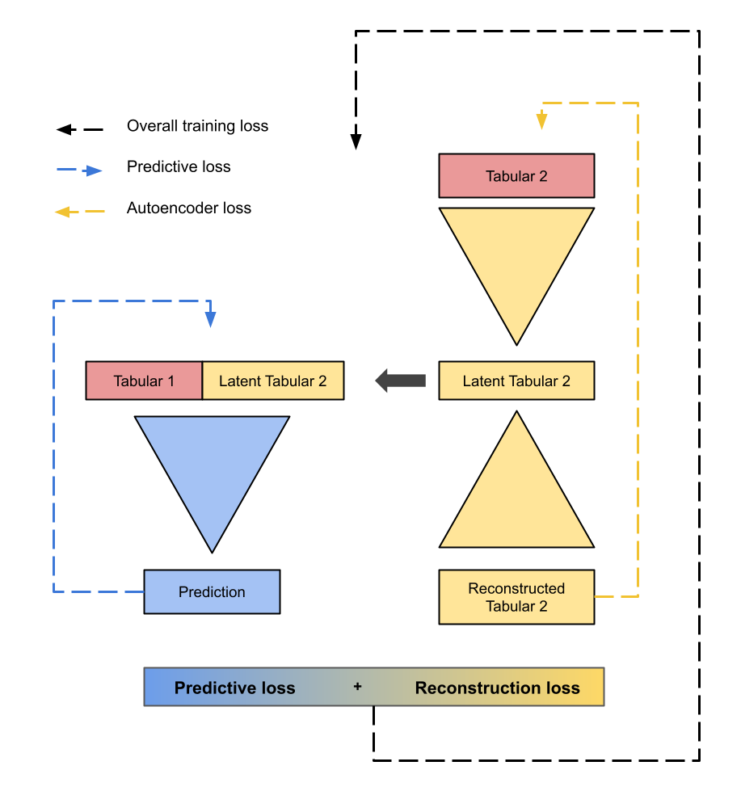

Note
Go to the end to download the full example code
Fusion Model Template: Subspace-based Fusion
This tutorial will show you how to create a subspace-based fusion model.
Note
I recommend looking at How to create your own fusion model: a general template before looking at this template, as I will skip over some of the details that are covered in that template (particularly regarding documentation and idiosyncrasies of the fusion model template).
There are two types of subspace-based fusion models in this library:
A model that has subspace methods trained before the main prediction model. An example of this is
DAETabImgMaps. This works by training the subspace method first, then using the output of the subspace method as the input to the main prediction model.A model that has subspace methods (such as an autoencoder) trained simultaneously with the main prediction model. An example of this is
ConcatImgLatentTabDoubleLoss. This works by implementing a joint loss function that combines the loss of the subspace method and the loss of the main prediction model.
We will look at how to create both of these types of models.
Option 1: Simultaneously-trained subspace-based fusion model
There are two differences between this type of model and the general template in How to create your own fusion model: a general template:
Must have the attribute
self.custom_losswhich is the loss function used to train the subspace method (e.g. the MSELoss for an autoencoder).Must output the subspace method’s output in the
forwardmethod as the second list element e.g. output = [prediction, reconstruction]
Warning
Using custom loss is currently only implemented if the second modality is the reconstructed modality, e.g. the image in tabular-image fusion, or the second tabular modality in tabular-tabular fusion.
The reconstruction shape must be the same as the input shape.
Here is a diagram of an example of a simultaneously-trained subspace-based fusion model:
And here is the code for the model:
import numpy as np
import torch
import torch.nn as nn
import lightning.pytorch as pl
from fusilli.fusionmodels.base_model import ParentFusionModel
class TemplateSubspaceFusionModel(ParentFusionModel):
"""
Template for a subspace-based fusion model that has the subspace method trained before the main prediction model.
"""
method_name = "Template Subspace Fusion Model"
modality_type = "both_tab"
fusion_type = "subspace"
def __init__(self, pred_type, data_dims, params):
super().__init__(pred_type, data_dims, params)
# nn.Module: Subspace method for the second modality
self.subspace_method_downsample = nn.Sequential(
nn.Linear(750, 480),
nn.ReLU(),
nn.Linear(480, 220),
nn.ReLU(),
nn.Linear(220, 88),
)
self.subspace_method_upsample = nn.Sequential(
nn.Linear(88, 220),
nn.ReLU(),
nn.Linear(220, 480),
nn.ReLU(),
nn.Linear(480, 750),
)
# nn.Module: Prediction layers.
# Concatenating the subspace method's output with the first tabular modality data
self.pred_model = nn.Sequential(
nn.Linear(88 + data_dims[0], 50),
nn.ReLU(),
nn.Linear(50, 25),
nn.ReLU(),
nn.Linear(25, 5),
)
self.set_final_pred_layers(input_dim=5)
# nn.Module: Custom loss function for the reconstruction
self.custom_loss = nn.MSELoss()
def forward(self, x):
"""
Forward pass of the model.
Parameters
----------
x : list
List of modalities.
Returns
-------
list
List of outputs from the model.
"""
tabular_1 = x[0]
tabular_2 = x[1]
# get the subspace method's output
subspace_output = self.subspace_method_downsample(tabular_2)
subspace_reconstruction = self.subspace_method_upsample(subspace_output)
# get the prediction model's output (concatenating the subspace method's output with the tabular data)
out_fused = self.pred_model(torch.cat([tabular_1, subspace_output]))
prediction = self.final_prediction(out_fused)
# returning the subspace method's output as the second list element
return [prediction, subspace_reconstruction]
Now that we’ve got the basic structure of the model, there is one additional thing to consider:
Can the model be modified?
For the most user flexibility, the model attributes should be able to be modified (such as the subspace method layers) and the model should be able to recalculate the layers of the model if the attributes are modified.
For more information on this, see Step 3 in :ref:`how_to_contribute_a_template_other_fusion`.
Option 2: Pre-trained subspace-based fusion model
This section will show how to create susbapce-based fusion model which involves one or more models that have to be pre-trained.
The .py file that contains the whole fusion model must have the following three things:
A PyTorch Lightning module which contains the subspace model architecture, e.g.
class TemplateSubspaceModel(pl.LightningModule):A class with the methods
load_ckpt,train, andconvert_to_latent, which are used to load the pre-trained model, train a latent space, and convert data to a latent space respectively. These are called when the data for the fusion model is loaded inget_data_module().The fusion model class which contains the main prediction model architecture, e.g.
class TemplateSubspaceFusionModel(ParentFusionModel, nn.Module):Similar to a general fusion model, this must have the methods__init__,calc_fused_layers, andforward.
This is a diagram of an example of a pre-trained subspace-based fusion model:

Let’s go through each of these in detail.
Step 1: Create the PyTorch Lightning subspace model
Might be useful to familiarise yourself with the pytorch lightning module first.
Methods that must have specific names:
__init__: initialising with input parametersdata_dimsand any other parameters that are needed for the model and accessible from theparamsdictionary.forward: the forward pass of the model. Takesxas input. Must be modifiable (see Step 3 in How to create your own fusion model: a general template) for details.training_step: the training step of the model. Takesbatchandbatch_idxas input.validation_step: the validation step of the model. Takesbatchandbatch_idxas input.configure_optimizers: the optimiser of the model.
Methods that can have any name:
A method that gets the latent space of the model from the input data, e.g.
encode_imagefor an autoencoder with an image input. In our example, this isget_latent_rep.
Here’s an example of a model with a simple 2-layer autoencoder to get the latent space of the tabular data.
class TemplateSubspaceModel(pl.LightningModule):
def __init__(self, data_dims):
super(TemplateSubspaceModel, self).__init__()
self.tab_shape = data_dims[0]
self.encoder = nn.Linear(self.tab_shape, 50)
self.decoder = nn.Linear(50, self.tab_shape)
def forward(self, x):
x = self.encoder(x)
x = self.decoder(x)
return x
def training_step(self, batch, batch_idx):
output = self(batch)
loss = nn.MSELoss()(output, batch)
return loss
def validation_step(self, batch, batch_idx):
output = self(batch)
loss = nn.MSELoss()(output, batch)
return loss
def configure_optimizers(self):
return torch.optim.Adam(self.parameters(), lr=0.001)
def get_latent_rep(self, x):
return self.encoder(x)
Step 2: create the class with the methods load_ckpt, train, and convert_to_latent
Must have a class attribute (defined before the __init__ method) subspace_models: a list of the subspace model classes.
For our example, subspace_methods = [TemplateSubspaceModel].
Must have the following methods:
__init__: initialising with input parametersdatamodule,k,max_epochs, andtrain_subspace. For detailed documentation, seeconcat_img_latent_tab_subspace_method.load_ckpt: loading the pre-trained model. Takescheckpoint_pathas input.train: training the latent space. Takestrain_datasetandval_datasetas input.convert_to_latent: converting the data to a latent space. Takestest_datasetas input.
Let’s create the __init__ method first.
Note
The
datamoduleparameter is the data module that is created inget_data_module(). This is used to get the data for the subspace method.
The input arguments that we need are datamodule, k, max_epochs, and train_subspace. These are all passed to this method during get_data_module(), so we need to make sure that we have these as input arguments.
A couple things need to happen in the __init__ method:
Set the
datamoduleattribute to the inputdatamodule. This is accessed during utilities relating to checkpointing.The subspace model,
TemplateSubspaceModel, must be initialised. This is done by callingself.subspace_models[0].If
train_subspaceisTrue, then the subspace model must be trained. This means that we need to:
Get the appropriate checkpoint path for the subspace model. This is done by calling
get_checkpoint_filenames_for_subspace_models().Initialise a PyTorch Lightning trainer using
init_trainer().
Here’s an example of the __init__ method:
from fusilli.utils.training_utils import get_checkpoint_filenames_for_subspace_models, init_trainer
class TemplateSubspaceMethod:
subspace_models = [TemplateSubspaceModel]
def __init__(self, datamodule, k=None, max_epochs=1000, train_subspace=True):
self.datamodule = datamodule
self.autoencoder = self.subspace_models[0](datamodule.data_dims)
if train_subspace:
autoencoder_ckpt_list = get_checkpoint_filenames_for_subspace_models(self, k)
# returns a list of checkpoint paths for the subspace model (length 1 for our example)
self.trainer = init_trainer(
logger=None, # no logger for the subspace models
params=self.datamodule.params, # pass in the params dictionary stored in the datamodule
max_epochs=max_epochs, # max_epochs is an input argument
checkpoint_filename=autoencoder_ckpt_list[0], # checkpoint_filename is the first element of the list
)
# %%
# Now let's create the ``load_ckpt`` method. This is called when we have already trained the subspace model and we are passing new data through the model, such as in :func:`~.RealsVsPreds.from_new_data`.
#
# The ``state_dict`` of the model must be loaded from the checkpoint.
# ... continuing from the previous code snippet ...
def load_ckpt(self, checkpoint_path):
self.autoencoder.load_state_dict(torch.load(checkpoint_path[0])["state_dict"])
Onto the train method.
The following must happen in this method:
The data will be input as train and validation datasets and these need to be converted to dataloaders.
The model will be trained and tested by calling
.fitand.validate()on the trainer.The latent space of the train data will be calculated by calling
.get_latent_repon the model.The new train data will be returned as a list of length 2:
[the predictive train features, pandas dataframe of the train labels].
Warning
Be careful not to get your train and test data mixed up! Both have to be converted to the latent space but only the train dataset should be used in .fit()
Here’s an example of the train method for our example, where the second tabular modality is being converted to a latent space to be our new second tabular modality:
e.g. [tab1, tab2] -> [tab1, tab2_latent]
# imports for the train method
import pandas as pd
from torch.utils.data import DataLoader
# ... continuing from the previous code snippet ...
def train(self, train_dataset, val_dataset):
tabular1_train_features = train_dataset[:][0]
tabular2_train_features = train_dataset[:][1]
train_labels = train_dataset[:][2]
tabular1_val_features = val_dataset[:][0]
tabular2_val_features = val_dataset[:][1]
val_labels = val_dataset[:][2]
# setting dataloaders for the train and validation datasets of tabular 2
train_dataloader = DataLoader(
tabular2_train_features,
batch_size=16, # customise
shuffle=False,
)
val_dataloader = DataLoader(
tabular2_val_features,
batch_size=16, # customise
shuffle=False,
)
# training the model
self.trainer.fit(self.autoencoder, train_dataloader, val_dataloader)
# validating the model
self.trainer.validate(self.autoencoder, val_dataloader)
# setting the model to evaluation mode
self.autoencoder.eval()
# getting the latent space of the train data
tabular2_train_features_latent = self.autoencoder.get_latent_rep(tabular2_train_features)
# returning the new train data
new_pred_features = [tabular1_train_features, tabular2_train_features_latent]
label_dataframe = pd.DataFrame(
train_labels, columns=["pred_label"]
)
return [new_pred_features, label_dataframe]
Finally, let’s create the convert_to_latent method.
This is similar to the train method, except that we don’t need to train the model, only convert the input data to the already-trained latent space.
We will return the list, like in the train method, but this time there will be an additional element in the list: the list of data dimensions [tab1_dim, tab2_dim, img_dim].
In our example’s case, the data dimensions would be [tab1_dim, tab2_latent_dim, None].
# ... continuing from the previous code snippet ...
def convert_to_latent(self, test_dataset):
pass
Step 3: create the fusion model class
Very similar to the general fusion model template in How to create your own fusion model: a general template.
Biggest difference is that we have an additional class-level attribute subspace_method, which points to the class that we created in Step 2.
This fusion model will use the data from convert_to_latent in Step 2, not the original input data.
class TemplateSubspaceFusionModel(ParentFusionModel, nn.Module):
method_name = "Template Subspace Fusion Model - with pre-trained subspace method"
modality_type = "both_tab"
fusion_type = "subspace"
# class-level attribute pointing to the subspace method class
subspace_method = TemplateSubspaceMethod
def __init__(self, pred_type, data_dims, params):
ParentFusionModel.__init__(self, pred_type, data_dims, params)
# nn.Module: Prediction layers concatenating the latent space with the tabular data
self.pred_model = nn.Sequential(
nn.Linear(data_dims[0] + data_dims[1], 50),
nn.ReLU(),
nn.Linear(50, 25),
nn.ReLU(),
nn.Linear(25, 5),
)
# setting the final prediction layers based on the prediction type
self.set_final_pred_layers(input_dim=5)
def forward(self, x):
tabular_1 = x[0]
tabular_2 = x[1]
# get the prediction model's output (concatenating the latent space with the tabular data)
out_fused = self.pred_model(torch.cat([tabular_1, tabular_2], dim=1))
# get the final prediction
prediction = self.final_prediction(out_fused)
# returning the prediction as the first list element
return [prediction, ]
As with the simultaneously-trained subspace-based fusion model, we need to think about:
Note
Can the model be modified?
For the most user flexibility, the model attributes should be able to be modified (such as the subspace method layers) and the model should be able to recalculate the layers of the model if the attributes are modified.
For more information on this, see Step 3 in How to create your own fusion model: a general template.
Total running time of the script: (0 minutes 0.011 seconds)